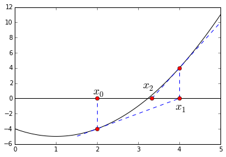

牛顿迭代法
求二次根
各位同学可能遇到过这样的编程题目，要求在不使用或的前提下，求解的正二次根。
可以用牛顿迭代法解：
def mysqrt(c, x = 1, maxiter = 10, prt_step = False):
for i in range(maxiter):
x = 0.5*(x+ c/x)
if prt_step == True:
# 在输出时，{0}和{1}将被i+1和x所替代
print "After {0} iteration, the root value is updated to {1}".format(i+1,x)
return x
print mysqrt(2,maxiter =4,prt_step = True)
# After 1 iteration, the root value is updated to 1.5
# After 2 iteration, the root value is updated to 1.41666666667
# After 3 iteration, the root value is updated to 1.41421568627
# After 4 iteration, the root value is updated to 1.41421356237
# result : 1.4142135623746899
牛顿迭代法（Newton's Itervative Method）
上面的求正二次根问题，等价于求的正根
根据上一节介绍的线性近似：
如果是的一个根，即，则：
因此，如果我们对的正根有一个初始估计，便可以用上面的近似不断获取更加准确的估计值，方法为：
将带入上式，便会得到代码中的跟新规则了。
通过绘图我们能进一步了解这个方法（喜闻乐见的绘图时刻又到了！）：
f = lambda x: x**2-2*x-4
l1 = lambda x: 2*x-8
l2 = lambda x: 6*x-20
x = np.linspace(0,5,100)
plt.plot(x,f(x),'black')
plt.plot(x[30:80],l1(x[30:80]),'blue', linestyle = '--')
plt.plot(x[66:],l2(x[66:]),'blue', linestyle = '--')
l = plt.axhline(y=0,xmin=0,xmax=1,color = 'black')
l = plt.axvline(x=2,ymin=2.0/18,ymax=6.0/18, linestyle = '--')
l = plt.axvline(x=4,ymin=6.0/18,ymax=10.0/18, linestyle = '--')
plt.text(1.9,0.5,r"$x_0$", fontsize = 18)
plt.text(3.9,-1.5,r"$x_1$", fontsize = 18)
plt.text(3.1,1.3,r"$x_2$", fontsize = 18)
plt.plot(2,0,marker = 'o', color = 'r' )
plt.plot(2,-4,marker = 'o', color = 'r' )
plt.plot(4,0,marker = 'o', color = 'r' )
plt.plot(4,4,marker = 'o', color = 'r' )
plt.plot(10.0/3,0,marker = 'o', color = 'r' )
plt.show()

我们要猜的解，从的初始猜测值开始，找到在处的切线，找到其与的交点，将该交点更新为新的猜测的解，如此循环。
如下定义牛顿迭代法：
def NewTon(f, s = 1, maxiter = 100, prt_step = False):
for i in range(maxiter):
# 相较于f.evalf(subs={x:s}),subs()是更好的将值带入并计算的方法。
s = s - f.subs(x,s)/f.diff().subs(x,s)
if prt_step == True:
print "After {0} iteration, the solution is updated to {1}".format(i+1,s)
return s
from sympy.abc import x
f = x**2-2*x-4
print NewTon(f, s = 2, maxiter = 4, prt_step = True)
# After 1 iteration, the solution is updated to 4
# After 2 iteration, the solution is updated to 10/3
# After 3 iteration, the solution is updated to 68/21
# After 4 iteration, the solution is updated to 3194/987
# 3194/987
Sympy可以帮助我们求解方程，不要教坏小朋友们哦：
sympy.solve(f,x)
# result: [1 + sqrt(5), -sqrt(5) + 1]